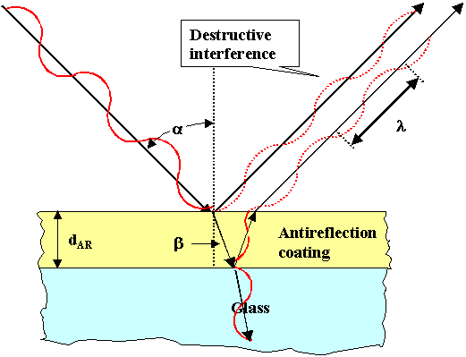

Tratamientos Antirreflejantes
Contenido
7. Tratamientos Antirreflejantes¶
Los tratamientos antirreflejantes responden a la cuestión de si podemos reducir las pérdidas que se producen por reflexiones en las superficies ópticas. A su vez, los tratamientos antirreflejantes sirven a su vez para eliminar reflejos molestos en, por ejemplo, gafas con cristales de alto índice.
En primer lugar, veamos una estimación de la magntiud de estas pérdidas. Para ello supondremos un haz de luz blanca que ilumina un elemento óptico con índice \(n_v = 1.8\), como puede ser una lente oftálmica, lo suficientemente grueso como para que no se produzca interferencia entre las ondas reflejadas en su primera y segunda cara (recordar que si el elemento óptico lo podemos aproximar por una lámina planoparalela, la diferencia de camino óptico entre estas ondas es proporcional a su grosor. Si éste es lo suficientemente grande, dicha diferencia de camino será mayor que la longitud de coherencia de la fuente). ¿Qué valor de la reflectancia tendremos?
La reflectancia se define como el cociente entre la irradiancia reflejada y la incidente, es decir, \(R = \frac{I_R}{I_i}\). Por otro lado, \(I_r = I_1 + I_2\), siendo \(I_1\) la irradiancia reflejada en la primera cara del elemento óptico que estamos considerando e \(I_2\) la irradiancia reflejada en la segunda cara. Además, llamando \(r_{1,2}\) a los coeficientes de reflexión en la primera o segunda cara respectivamente, y \(t_1/t'_1\) a los coeficientes de transmisión en la primera cara cuando el haz incide desde el aire o desde dentro del material, tendremos que,
y por tanto,
Tomando un valor de \(n_v \sim 1.8\), el valor de la reflectancia es \(R \sim 0.08\), es decir, estas pérdidas por reflexión suponen, aproximadamente, un \(\sim\) 8% en este elemento óptico. Si tenemos más de un elemento óptico en nuestro sistema, estas pérdidas representan un problema para tener suficiente energía al final de nuestro sistema.
7.1. Estrategia para reducir las pérdidas por reflexión. Tratamientos antirreflejantes.¶
Para evitar estas pérdidas, podemos depositar una lámina delgada de un material dieléctrico, con el objetivo de producir interferencia destructiva en reflexión en esta capa. Es conveniente insistir en que, dado que normalmente la iluminación se va a producir con luz blanca, esta capa que depositamos sobre la superficie del elemento óptico ha de ser lo suficientemente delgada como para que la diferencia de camino entre las ondas reflejadas en su primera y segunda cara no sea mayor que la longitud de coherencia de la radiación que lo ilumina. Si no es así, no se producirá interferencia, y el tratamiento pierde su función.
Teniendo en cuenta que la longitud de coherencia de un haz de luz blanca es del orden de \(\sim 2 \mu\)m, y que la diferencia de camino entre estas ondas, suponiendo incidencia normal es \(\Delta = 2 n_c h\), el grosor máximo del tratamiento será del orden de \(1/n_c \mu\)m.

Esta condición nos establece que para diseñar nuestro tratamiento antirreflejante debemos fijar dos parámetros: el grosor \(h\) del tratamiento y el índice del material que lo compone \(n_c\) (Hay que notar que hemos fijado el valor de \(\lambda\) y del ángulo de incidencia. Si los cambiamos, cambia la condición de interferencia destructiva). Vamos a ver a continuación cómo elegirlo para reducir al máximo la energía reflejada (y aumentar por tanto la energía transmitida).
7.2. Elección del grosor del tratamiento.¶
De la expresión anterior, podemos despejar el valor del grosor \(h\) del tratamiento, obteniendo
En primer lugar, vemos que el grosor depende del índice de refracción \(n_c\). Este parámetro vamos a fijarlo un poco más adelante. También vemos que esta condición no nos da un único valor del grosor. El número \(m\) puede tomar cualquier valor entero (nulo o positivo, ya que un grosor negativo no tendría sentido). Recuperando la discusión realizada anteriormente, existe un valor máximo del grosor para que el tratamiento sea efectivo, pero aun así, hay varios valores posibles. ¿Cuál es, dentro de estos valores, el que puede resultar óptimo?.
Si nos fijamos únicamente en la condición de mínimo de reflectancia (condición de interferencia destructiva), no tenemos ningún argumento para elegir entre uno u otro espesor. Todos ellos dan la misma reflectancia en el mínimo. Para poder discriminar cuál es el óptimo para un tratamiento antirreflejante, tenemos que ampliar nuestro estudio. Tenemos que mirar a otras longitudes de onda, fuera de aquella para la que se produce la condición de mínimo (y que aparece en la expresión anterior del grosor).
La siguiente figura muestra cómo es la curva de reflectancia en función de la longitud de onda para diferentes grosores que cumplen la condición anterior, es decir, diferentes grosores que obtenemos dando diferentes valores a \(m\). De la figura se pueden extraer varias conclusiones:
El valor mínimo se obtiene, en todos los espesores, a la misma longitud de onda y nos da el mismo valor de la reflectancia. Es decir, para esa longitud de onda, no hay diferencia entre los distintos espesores mostrados, como hemos comentado anterioremente.
Fuera del mínimo, el grosor más pequeño da un comportamiento más suave y con valores menores de la reflectancia, comparado con lo obtenido con espesores mayores, en donde pueden aparecer incluso máximos en la reflectancia para longitudes de onda cercanas al mínimo.
Como normalmente vamos a desear minimizar la reflectancia en un rango grande de longitudes de onda (por ejemplo el rango del espectro visible en el caso de luz blanca), no sólo nos importa lo que ocurra en el mínimo, sino para otras longitudes de onda cercanas. Observando los dos puntos anteriores, podemos llegar a la conclusión de que el espesor óptimo para el tratamiento es el menor de todos aquellos que dan interferencia destructiva, es decir,
donde \(\lambda\) es la longitud de onda a la que minimizamos la reflectancia. Normalmente, la escogeremos como aquella en el punto medio del rango en el que queremos minimizar la reflectancia.
from numpy import *
from matplotlib.pyplot import *
# MODIFICAR LOS PARAMETROS. LUEGO EJECUTAR
########################################################
nc = 1.38 # Índice de la monocapa (MgF2)
nL = 1.8 # Índice del elemento óptico (lente de alto índice)
l0 = 550 # Longitud de onda a la que se optimiza el tratamiento.
espesor1 = l0/(4*nc)
espesor2 = 3*l0/(4*nc) # Incluir el valor del segundo espesor más pequeño de la monocapa (en nm)
espesor3 = 5*l0/(4*nc) # Incluir el valor del tercer espesor más pequeño de la monocapa (en nm)
# DESDE AQUÍ NO TOCAR.
##############################################################################################################################
longitud_de_onda = linspace(400,750,100) # Crea los valores de las longitudes de onda en el visible (en nm)
# Coeficientes de reflexion y transmision
rA = (1-nc)/(1+nc) # Coeficiente de reflexión aire --> monocapa
tA = 2*1/(1+nc) # Coeficiente de transmisión aire --> monocapa
rB = (nc-nL)/(nc+nL) # Coeficiente de reflexión monocapa --> lente
tC = 2*nc/(nc+1) # Coeficiente de transmissión monocapa --> aire
# Desfase y Reflectancia para el espesor mínimo
desfase1 = (2*pi/longitud_de_onda)*2*nc*espesor1 + 0*pi # desfase geométrico + desfase debido a las reflexiones
Reflectancia_tratamiento1 = 100*( rA**2 + (tA*rB*tC)**2 + 2*sqrt( (rA**2)*(tA*rB*tC)**2 )*cos(desfase1) ) # Reflectancia (%)
# Desfase y Reflectancia para el segundo espesor mínimo
desfase2 = (2*pi/longitud_de_onda)*2*nc*espesor2 + 0*pi # desfase geométrico + desfase debido a las reflexiones
Reflectancia_tratamiento2 = 100*( rA**2 + (tA*rB*tC)**2 + 2*sqrt( (rA**2)*(tA*rB*tC)**2 )*cos(desfase2) ) # Reflectancia (%)
# Desfase y Reflectancia para el segundo espesor mínimo
desfase3 = (2*pi/longitud_de_onda)*2*nc*espesor3 + 0*pi # desfase geométrico + desfase debido a las reflexiones
Reflectancia_tratamiento3 = 100*( rA**2 + (tA*rB*tC)**2 + 2*sqrt( (rA**2)*(tA*rB*tC)**2 )*cos(desfase3) ) # Reflectancia (%)
# Dibujamos la reflectancia en función de la longitud de onda
plot(longitud_de_onda,Reflectancia_tratamiento1,longitud_de_onda,Reflectancia_tratamiento2,longitud_de_onda,Reflectancia_tratamiento3,lw=2) # Pintamos la reflectancia
xlabel('$\lambda$ (nm)',fontsize=16);ylabel('Reflectancia (%)',fontsize=16) # Escribimos los nombres de los ejes ç
legend(('espesor1','espesor2','espesor3'),loc =4) # Escribimos la leyenda;
<matplotlib.legend.Legend at 0x7f02898ca7d0>
7.3. Cuestiones¶
Cambiar el valor del parámetro
l0en el código (longitud de onda en la que se optimiza el tratamiento). ¿Cómo cambia la figura?Calcular el valor de los espesores utilizados para generar la gráfica y compararlos con la longitud de coherencia de un haz de luz blanca. ¿En alguno de ellos la diferencia de camino sería mayor que la longitud de coherencia?. ¿Qué consecuencias tendría si fuera así?.
¿Qué colores se observarían en reflexión si ilumináramos con luz blanca un tratamiento con el espesor3?
7.4. Elección del material del tratamiento¶
Hemos visto que el espesor óptimo para el tratamiento es el más pequeño entre aquellos que provocan interferencia destructiva en reflexión. Sin embargo, no hemos fijado aún el valor del índice de refracción que tenemos que utilizar para el tratamiento. Para ello, vamos a recordar cómo es la irradiancia en reflexión en el mínimo de reflectancia. Su valor será:
Este valor de la irradiancia en reflexión no puede ser nulo ya que \(I_1\) es mayor que \(I_2\), como se puede observar de sus expresiones y de los valores de los coeficientes de Fresnel. O dicho de otro modo, el contraste no puede ser igual a 1 cuando consideramos la interferencia de las dos primeras ondas en reflexión, como es nuestro caso. Sin embargo, podemos intentar que las irradiancias sean lo más parecidas posibles. De este modo conseguimos un valor de \(I_r\) muy próximo a 0 en el mínimo. ¿Cómo conseguir este resultado?. ¿Cómo hacer que las irradiancias \(I_1\) e \(I_2\) sean lo más parecidas posibles?.
Lo que tenemos que conseguir es \(I_1 \simeq I_2\). O si escribimos las expresiones de estas irradiancias en función de los coeficientes de Fresnel,
Sabemos que no son iguales, pero si el tratamiento lo forma un material dieléctrico con \(r_1\) “pequeño” , \(t_1 t'_1 \sim 1\) (ya que si hay poca reflexión, la transmisión será grande). Haciendo esta aproximación, la ecuación anterior nos queda:
donde se han simplificado los cuadrados y se ha tomado ya el signo “=” en vez de \(\simeq\). Resolviendo esta ecuación, tenemos que el índice del tratamiento \(n_c\) ha de cumplir la siguiente condición para que el mínimo de reflectancia sea lo más bajo posible:
Nota antes de seguir: El valor del espesor óptimo se ha tomado para reducir la reflectancia fuera del mínimo. El valor del índice de refracción óptimo se ha tomado para que el valor de la reflectancia en el mínimo sea lo más pequeño posible (imponiendo la condición de que las irradiancias de las ondas que interfieren sean lo más parecidas posibles.)
En la siguiente figura se puede variar el valor del índice de la capa utilizada como tratamiento antirreflejante para un índice de la lente sobre el que lo depositvamos igual a 1.8. Observar cómo cambia el valor de la reflectancia con dicho índice del tratamiento. El valor óptimo se encuentra en torno a 1.35. Es por ello que un material común para utilizar como tratamiento antirreflejante es el Fluoruro de Magnesio (MgF\(_2\)) pues su índice es igual a 1.38 en el visible, muy cerca del valor óptimo. Además, este material permite realizar tratamientos con gran durabilidad.
import ipywidgets as wg
import matplotlib.pyplot as plt
##################################################################################################
nL = 1.8
# Desfase y Reflectancia para el espesor mínimo
def reflecindice(nc):
espesor = 550/(4*nc)
longitud_de_onda = linspace(400,750,100) # Crea los valores de las longitudes de onda en el visible (en nm)
# Coeficientes de reflexion y transmision
rA = (1-nc)/(1+nc) # Coeficiente de reflexión aire --> monocapa
tA = 2*1/(1+nc) # Coeficiente de transmisión aire --> monocapa
rB = (nc-nL)/(nc+nL) # Coeficiente de reflexión monocapa --> lente
tC = 2*nc/(nc+1) # Coeficiente de transmissión monocapa --> aire
desfase = (2*pi/longitud_de_onda)*2*nc*espesor + 0*pi # desfase geométrico + desfase debido a las reflexiones
Reflectancia_tratamiento = 100*( rA**2 + (tA*rB*tC)**2 + 2*sqrt( (rA**2)*(tA*rB*tC)**2 )*cos(desfase) ) # Reflectancia (%)
# Dibujamos la reflectancia en función de la longitud de onda
fig, ax = plt.subplots(figsize=(7,6))
ax.plot(longitud_de_onda,Reflectancia_tratamiento,lw=2) # Pintamos la reflectancia
ax.set_xlabel('$\lambda$ (nm)',fontsize=16);ylabel('Reflectancia (%)',fontsize=16) # Escribimos los nombres de los ejes
ax.set_ylim(0,8)
return
wg.interact(reflecindice, nc=(1.2,1.8,0.05))
<function __main__.reflecindice(nc)>
7.5. Cuestiones:¶
Todo el análisis anterior se basa en que la luz incide normalmente (ángulo de incidencia nulo) al tratamiento. Reflexionar sobre qué cambiaría si fijáramos el tratamiento para que funcionara a un ángulo de incidencia distinto. ¿Qué termino habría que añadir al desfase?. ¿Cómo cambiaría el espesor óptimo?.